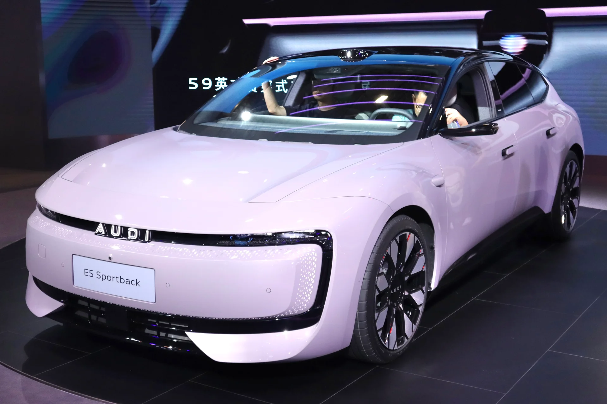
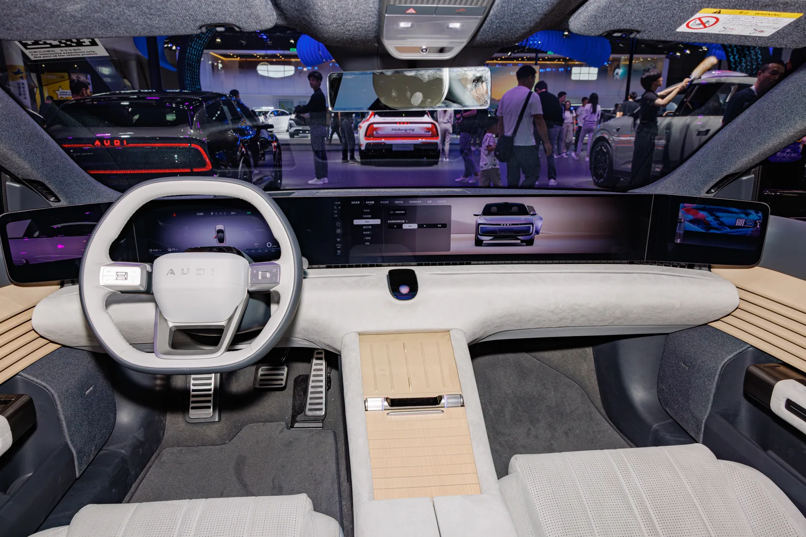
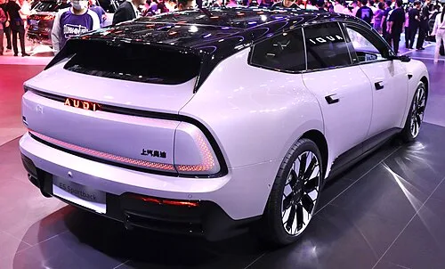
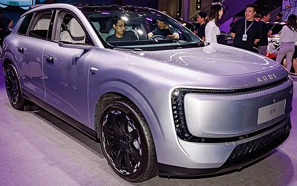
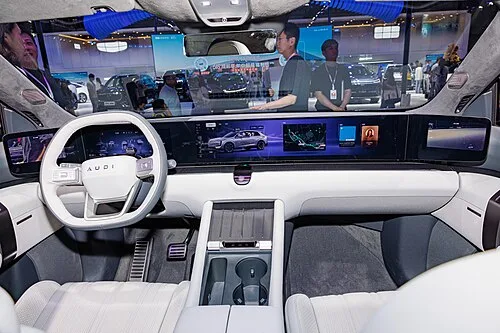

▲ 중국 전용 서브 브랜드 'AUDI'의 E5 스포트백. 상하이오토쇼에 전시된 모습으로, 전통적인 네 개 고리 로고 대신 AUDI 레터링을 쓴다 ⓒ Wikimedia Commons (CC BY-SA 4.0)
'AUDI'라는 이름을 단 전기차가 독일 도로 위에 등장했다. 그런데 이 차를 막겠다고 나선 곳이 다름 아닌 아우디 본사다.
독일 잉골슈타트에 본사를 둔 아우디가 자사 중국 합작 브랜드 'AUDI'의 전용 모델 E5 스포트백과 E7X를 상대로 법적 대응에 나섰다. 정확히는 이 차량들을 무단으로 유럽에 들여와 판매하는 독일 병행수입업체를 상대로 소송을 시작한 것이다. 같은 로고, 같은 이름을 쓰는 차를 정작 만든 회사가 자국 시장에서 밀어내려는 이례적인 상황이 벌어지고 있다. 지피코리아 등 국내외 매체 보도를 토대로 사건의 전말을 정리했다.
1. E5·E7X — 아우디이면서 아우디가 아닌 차
E5 스포트백과 E7X는 아우디가 중국 시장만을 위해 만든 별도 브랜드 'AUDI'의 전기차다. 아우디는 상하이자동차(SAIC)와의 합작법인을 통해 이 서브 브랜드를 선보이면서, 전통적인 네 개 고리(Four Rings) 로고 대신 'AUDI'라는 레터링 엠블럼을 사용한다. 외관과 실내 디자인 역시 유럽에서 판매되는 아우디 라인업과는 완전히 다른, 중국 젊은 소비자층을 겨냥한 별개의 스타일로 개발됐다.
| 구분 | E5 스포트백 | E7X |
|---|---|---|
| 차체 형태 | 준대형 4도어 쿠페(패스트백) | 대형 SUV |
| 공개·출시 | 2025년 4월 상하이오토쇼 공개, 8월 말 인도 개시 | 2025년 광저우오토쇼 콘셉트 공개, 2026년 5월 정식 출시 |
| 크기(길이×너비×높이) | 4,881×1,959×1,478mm | 5,049×1,997×1,710mm |
| 배터리 | CATL 100kWh NMC | CATL 100kWh 또는 109.3kWh NMC |
| 주행거리(CLTC 기준) | 최대 약 770km | 약 615~751km(배터리 용량별) |
| 최고 출력 | 듀얼모터 총 775PS, 0-100km/h 3.6초 | 최대 671마력(듀얼모터), 0-100km/h 3.9초~ |
두 차종은 2026년 들어서만 각각 수천~1만 대 이상 팔리며 중국 내수에서 안정적으로 자리를 잡았다. 그러나 이 차들은 애초에 유럽 판매를 염두에 두고 개발된 모델이 아니다. 소프트웨어, 커넥티비티 사양, 부품 체계 모두 중국 현지 기준에 맞춰져 있다.

▲ 모터쇼에 전시된 AUDI E5 스포트백 실내. 대시보드 전면을 가로지르는 초대형 디스플레이와 유럽형 아우디와 다른 독자적인 인테리어 디자인이 특징이다 ⓒ Wikimedia Commons (CC BY-SA 4.0)
2. 병행수입 경위 — 독일 수입업체가 중국 재고를 그대로 들여왔다
사건의 발단은 독일 현지 수입업체 '오토 차이나(Auto China)'다. 이 업체는 중국에서 판매 중인 E5 스포트백과 E7X 물량을 확보한 뒤, 독일 및 유럽연합(EU) 기준에 맞춘 형식승인(현지 인증) 절차를 거쳐 정식으로 등록·판매에 나섰다. 공식 딜러망을 거치지 않고 제3자가 해외 차량을 들여와 파는 이른바 '병행수입(그레이마켓)' 방식이다.
📍 병행수입, 자동차에서는 왜 문제가 될까
가전제품이나 명품과 달리 자동차는 사후 서비스 체계가 절대적으로 중요하다. 병행수입 업체가 등록·보증·정비까지 자체적으로 처리한다고 주장해도, 해당 차량은 제조사의 공식 서비스망에 편입되지 않는다. 특히 E5·E7X는 유럽에 없는 중국 전용 부품 체계를 쓰기 때문에, 사고나 고장 시 부품 수급과 수리에 실질적인 어려움이 발생할 수 있다.
보도에 따르면 오토 차이나는 E5 스포트백을 약 6만~7만 유로, E7X를 약 7만 3천~8만 8천 유로 수준(매체·시점에 따라 가격 편차 있음)에 판매해왔다. 중국 현지 판매가 대비 대략 두 배 가까이 뛴 가격이지만, 그럼에도 유럽에서 정식 판매되는 아우디 전기차 라인업보다는 여전히 저렴하다는 점이 소비자들의 관심을 끌었다.

▲ E5 스포트백 후면부. 번호판 위 '上汽奥迪(상하이자동차 아우디)' 한자 표기에서 중국 합작 생산 차량임이 드러난다 ⓒ Wikimedia Commons (CC BY-SA 4.0)
관련 병행수입 이슈는 해외 매체를 통해서도 상세히 보도됐다. Motor1 보도 바로가기
3. 아우디의 법적 대응 — "권리를 엄격히 행사하겠다"
아우디는 이 상황을 좌시하지 않았다. 폭스바겐그룹 산하 아우디 대변인은 독일 경제전문지 아우토모빌보헤(Automobilwoche)에 "우리는 이미 해당 수입업체를 상대로 법적 절차를 개시했으며, 회사의 권리를 엄격하게 행사할 것"이라고 공식 입장을 밝혔다. 실제로 오토 차이나의 공식 웹사이트에서는 현재 E5 스포트백과 E7X 관련 판매 페이지가 내려간 상태로 확인된다.
| 이유 | 내용 |
|---|---|
| 자사 라인업 잠식 | E5·E7X가 저렴한 가격에 유럽 정식 판매 모델(S6 스포트백 e-tron, SQ6 e-tron 등) 수요를 잠식할 우려 |
| 사후 서비스 공백 | 중국 전용 부품 체계로 인해 유럽 공식 서비스망에서 정비·부품 수급이 불가능 |
| 소프트웨어·인증 불일치 | 중국 내수 기준 커넥티비티·소프트웨어가 유럽 규정과 맞지 않아 소비자 혼란 우려 |
| 브랜드 관리 | 같은 'AUDI' 이름을 쓰지만 품질보증·리콜 등 책임 소재가 불분명해지는 것을 우려 |
업계에서는 이번 소송이 단순히 한 수입업체를 겨냥한 것을 넘어, 앞으로 이어질 수 있는 유사 사례에 대한 선례를 만들려는 조치로 해석한다. 아우디로서는 중국 전용 브랜드를 만든 취지 자체가 '유럽 라인업과 겹치지 않는 별도 시장 공략'이었던 만큼, 이 전제가 흔들리는 것을 막아야 하는 상황이다.

▲ AUDI E7X. 2026년 5월 중국에서 정식 출시된 대형 SUV로, E5 스포트백과 함께 병행수입 논란의 중심에 섰다 ⓒ Wikimedia Commons (CC BY-SA 4.0)
4. 왜 하필 지금인가 — 중국 전기차 공급과잉과 역수입 현상
이번 사건은 아우디 한 회사만의 문제가 아니라, 중국 자동차 산업 전반의 구조적 변화와 맞닿아 있다. 2026년 상반기 중국 내 전기차 판매는 전년 대비 약 13% 감소한 반면, 중국에서 생산된 완성차의 해외 수출 물량은 오히려 60%대로 급증했다. 치열한 내수 가격 경쟁과 보조금 정책 변화로 수익성이 악화되자, 완성차 업체와 유통업체들이 남는 물량을 해외로 돌리고 있는 것이다.
| 요인 | 내용 |
|---|---|
| 중국 내수 위축 | 2026년 상반기 중국 전기차 판매 약 13% 감소 |
| 수출 물량 급증 | 같은 기간 중국산 완성차 수출 약 60%대 증가 |
| 아우디 중국 판매 부진 | 2026년 상반기 아우디 글로벌 판매 7% 감소, 이 중 중국 판매는 약 20% 급감 |
| 가격·보조금 압박 | 중국 내 가격 경쟁 심화와 보조금 정책 변화가 수익성을 악화시키며 물량 해외 이전을 부추김 |
아우디 입장에서는 이 현상이 더욱 뼈아프다. 중국 시장에서 판매 부진을 겪고 있는 상황에서, 정작 자사 브랜드를 단 차량이 '뒷문'을 통해 안방인 유럽 시장까지 흔들고 있기 때문이다. 업계에서는 이런 역수입 흐름이 아우디뿐 아니라 유럽에 진출한 다른 완성차 업체들에게도 비슷한 형태로 나타날 수 있다고 본다.

▲ 유럽에서 정식 판매되는 아우디 전기차의 예시(A2 e-tron). 네 개 고리 정통 로고를 사용하는 유럽 라인업은 중국 전용 'AUDI' 브랜드와는 완전히 별개의 모델이다 ⓒ 아우디
5. 업계 시사점 — 소비자가 알아둬야 할 것들
이번 사례는 완성차 업체들이 해외 전용 서브 브랜드를 운영할 때 마주치는 딜레마를 보여준다. 아우디처럼 특정 시장만을 겨냥한 별도 브랜드를 만들 경우, 가격 차이가 크게 벌어지면 병행수입을 원천적으로 막기가 쉽지 않다. 법적 대응은 개별 수입업체를 상대로는 효과가 있을 수 있지만, 근본적으로는 가격 격차와 물량 과잉이라는 구조적 요인이 해소되지 않는 한 유사 사례가 반복될 가능성이 크다.

▲ E7X 실내. 스티어링 휠 중앙에도 네 개 고리 대신 AUDI 레터링이 적용됐다 ⓒ Wikimedia Commons (CC BY-SA 4.0)
✅ E5·E7X 병행수입, 소비자가 알아야 할 리스크
· 보증·서비스 공백: 아우디 유럽 공식 서비스망을 통한 보증·정비를 받을 수 없다
· 부품 수급 어려움: 중국 전용 부품 체계로 사고·고장 시 수리가 지연되거나 불가능할 수 있다
· 법적 불확실성: 아우디의 법적 조치 결과에 따라 향후 판매·등록 자체가 제한될 가능성이 있다
· 가격 메리트는 제한적: 현지 인증 비용까지 더해지면 중국 현지가 대비 가격 이점이 크게 줄어든다
한국 소비자에게는 직접적인 영향이 크지 않지만, 국내에서도 중국산 전기차의 해외 진출이 본격화되는 흐름을 지켜볼 필요가 있다. 아우디의 이번 대응은 완성차 업체가 중국 생산 기지를 글로벌 전략에 어떻게 편입시킬지를 보여주는 사례이자, 동시에 그 전략이 뜻하지 않은 역풍으로 돌아올 수 있음을 보여주는 사례이기도 하다.
6. 요약
아우디가 중국 전용 서브 브랜드 'AUDI'의 전기차 E5 스포트백·E7X를 독일에 무단 반입해 판매해온 병행수입업체 '오토 차이나'를 상대로 법적 조치에 착수했다. 아우디는 "권리를 엄격히 행사하겠다"는 공식 입장을 밝혔고, 실제로 해당 업체의 판매 페이지는 현재 내려간 상태다.
이번 사건의 배경에는 중국 내수 전기차 시장의 판매 위축과 공급 과잉이 있다. 2026년 상반기 중국 전기차 판매는 약 13% 줄어든 반면 완성차 수출은 60%대로 급증했고, 아우디 역시 중국 판매가 약 20% 급감하며 압박을 받고 있다. 남는 물량이 유럽으로 역수입되는 구조가 이번 사태의 근본 원인으로 지목된다.
소비자 입장에서는 가격 메리트만 보고 병행수입 차량을 구매하기보다, 보증·부품·서비스 공백 가능성을 반드시 따져봐야 한다. 아우디의 법적 대응 결과에 따라 향후 유사한 병행수입 사례 전반에 영향을 미칠 것으로 보인다.